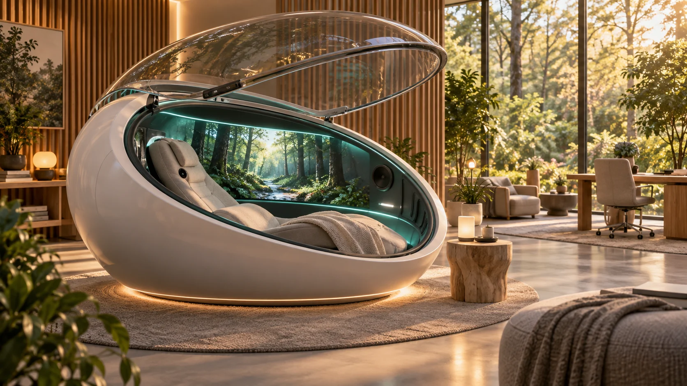
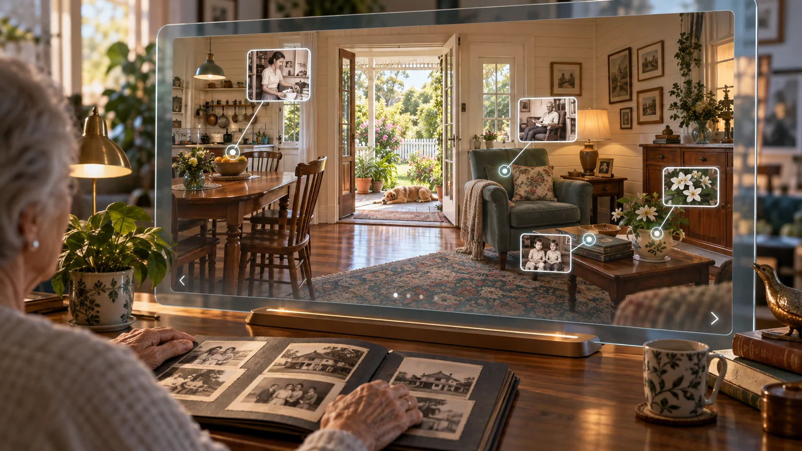

GenAI concept artworkAura Geode: where experience becomes understanding
Aura Geode is a proposed immersive capsule for developing a person's digital aura while researching the relationship between experience, environment and health. It brings together guided conversation, personalised sensory experiences and physical measurements, so that what someone feels and means can be considered alongside how their body responds. [5]
The Geode supplies the physical setting. Aura Genesis is the process of discovery and learning within and beyond it. Aura of Intelligence is the personal AI system that develops through that process and carries the learning into everyday life.
A session that learns with the person
Imagine revisiting a meaningful period of life through conversation, music and an immersive scene. The person describes what it evokes, corrects the AI's interpretation and explores connections with present hopes or concerns. The system links those reflections with the experience's timing and, where appropriate, measures such as heart rate and breathing.
Sessions could unfold in sequences of conversation, sensory experience, reflection and quiet. Adjustable lighting, sound, imagery and other suitable sensory elements would let participants explore different conditions. Recording what changed, when it changed and the person's response could reveal patterns worth investigating and deepen the personal model.
Over repeated sessions, the AI could suggest experiences based on earlier observations. Participants and practitioners could review those suggestions, revisit useful experiences and investigate unexpected responses. This makes personalisation a continuing process of learning together.

Connecting personal discovery with clinical research
The Geode concept includes a hyperbaric configuration: a pressure-controlled chamber in which oxygen can be delivered under specialist clinical supervision. Its proposed sensory, monitoring and communication systems would be developed with that setting in mind. Engineering and clinical partners could determine suitable equipment, combinations and research questions. [5, 6]
The research opportunity is to connect personal accounts with repeated observations, clinical assessments and selected biological measures. Carefully designed comparisons could investigate the contributions of individual elements, their timing, personal meaning and expectation. That could help explain which experiences are useful, for whom and in what circumstances.

Learning that travels beyond the capsule
The digital aura would retain the developing understanding for use at home, in care, at work and in future sessions. With permission, findings from different participants and centres could contribute to shared research while personal records remain under agreed individual and community control.
At Amity, the invitation is to develop an accessible setting where people help build their own digital companion while contributing to a wider science of living well.